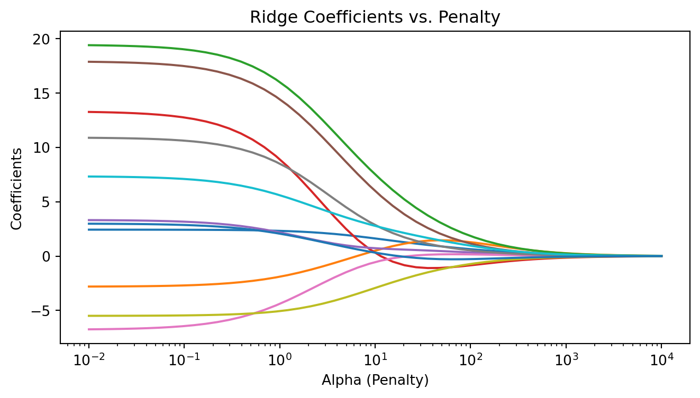
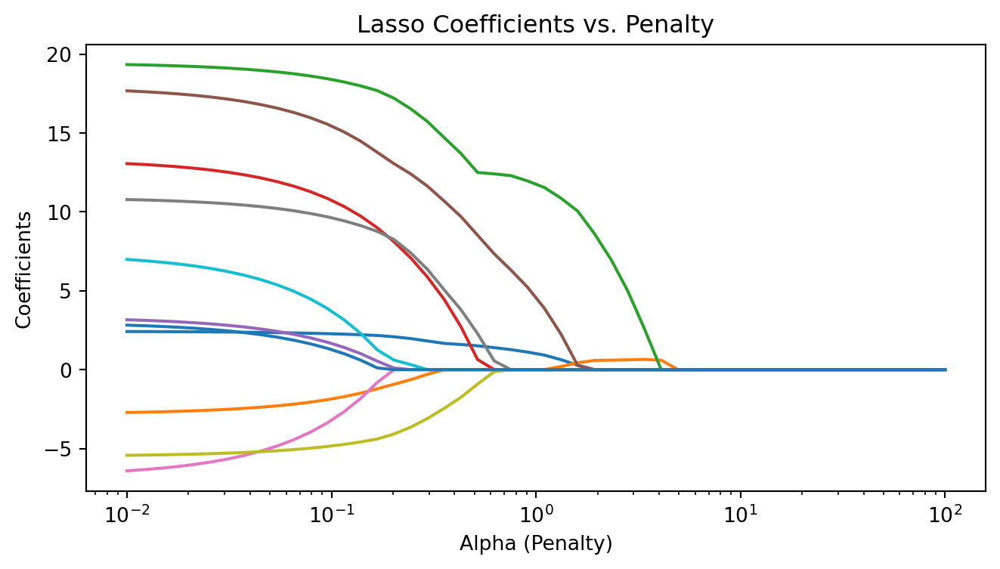

import pandas as pd
import numpy as np
import matplotlib.pyplot as plt
from sklearn.model_selection import train_test_split
from sklearn.linear_model import LinearRegression, Ridge, Lasso
from sklearn.preprocessing import StandardScaler, OneHotEncoder
from sklearn.compose import ColumnTransformer
from sklearn.pipeline import Pipeline
from plotnine import *
import warnings
warnings.filterwarnings('ignore')
np.random.seed(4025)MATH 4025: Regularization
Eric Friedlander
Computational Set-Up
Data: Candy
The data for this lecture comes from the article FiveThirtyEight The Ultimate Halloween Candy Power Ranking by Walt Hickey. To collect data, Hickey and collaborators at FiveThirtyEight set up an experiment where people could vote on a series of randomly generated candy match-ups (e.g., Reese’s vs. Skittles).
The data set contains characteristics and the win percentage from 85 candies in the experiment.
Data: Candy
<class 'pandas.DataFrame'>
RangeIndex: 85 entries, 0 to 84
Data columns (total 13 columns):
# Column Non-Null Count Dtype
--- ------ -------------- -----
0 competitorname 85 non-null str
1 chocolate 85 non-null int64
2 fruity 85 non-null int64
3 caramel 85 non-null int64
4 peanutyalmondy 85 non-null int64
5 nougat 85 non-null int64
6 crispedricewafer 85 non-null int64
7 hard 85 non-null int64
8 bar 85 non-null int64
9 pluribus 85 non-null int64
10 sugarpercent 85 non-null float64
11 pricepercent 85 non-null float64
12 winpercent 85 non-null float64
dtypes: float64(3), int64(9), str(1)
memory usage: 9.9 KBData Cleaning
candy_rankings_clean = candy_rankings.drop(columns=['competitorname']).copy()
# Convert probabilities into percentages
candy_rankings_clean['sugarpercent'] = candy_rankings_clean['sugarpercent'] * 100
candy_rankings_clean['pricepercent'] = candy_rankings_clean['pricepercent'] * 100
# Convert 0/1 boolean variables to categorical
bool_cols = ['chocolate', 'fruity', 'caramel', 'peanutyalmondy', 'nougat',
'crispedricewafer', 'hard', 'bar', 'pluribus']
candy_rankings_clean[bool_cols] = candy_rankings_clean[bool_cols].astype(str)Data Splitting
# Scikit-learn doesn't directly stratify on continuous values implicitly
# We bucket winpercent to use it as a straticiation parameter
stratify_bins = pd.qcut(candy_rankings_clean['winpercent'], q=4, labels=False)
candy_train, candy_test = train_test_split(
candy_rankings_clean,
test_size=0.25,
stratify=stratify_bins,
random_state=4025
)Shrinkage/Penalized/Regularization Methods
Question
- What criteria do we use to fit a linear regression model? Write down an expression with \(\hat{\beta_i}\)’s, \(x_{ij}\)’s, and \(y_j\)’s in it.
OLS
- Ordinary Least Squares Regression:
\[ \begin{aligned} \hat{\beta} =\underset{\hat{\beta}_0,\ldots, \hat{\beta}_p}{\operatorname{argmin}}SSE(\hat{\beta}) &= \underset{\hat{\beta}_0,\ldots, \hat{\beta}_p}{\operatorname{argmin}}\sum_{j=1}^n(y_j-\hat{y}_j)^2\\ &=\underset{\hat{\beta}_0,\ldots, \hat{\beta}_p}{\operatorname{argmin}}\sum_{j=1}^n(y_j-\hat{\beta}_0-\hat{\beta}_1x_{1j} - \cdots - \hat{\beta}_px_{pj})^2 \end{aligned} \]
- \(\hat{\beta} = (\hat{\beta}_0,\ldots, \hat{\beta}_p)\) is the vector of all my coefficients
- \(\operatorname{argmin}\) is a function (operator) that returns the arguments that minimize the quantity it’s being applied to
Ridge Regression
\[ \begin{aligned} \hat{\beta} &=\underset{\hat{\beta}_0,\ldots, \hat{\beta}_p}{\operatorname{argmin}} \left(SSE(\hat{\beta}) + \lambda\|\hat{\beta}\|_2^2\right) \\ &= \underset{\hat{\beta}_0,\ldots, \hat{\beta}_p}{\operatorname{argmin}}\left(\sum_{j=1}^n(y_j-\hat{y}_j)^2 + \lambda\sum_{i=1}^p \hat{\beta}_i^2\right)\\ &=\underset{\hat{\beta}_0,\ldots, \hat{\beta}_p}{\operatorname{argmin}}\left(\sum_{j=1}^n(y_j-\hat{\beta}_0-\hat{\beta}_1x_{1j} - \cdots - \hat{\beta}_px_{pj})^2 + \lambda\sum_{i=1}^p \hat{\beta}_i^2\right) \end{aligned} \]
- \(\lambda\) (alpha in scikit-learn) is a “tuning parameter” not estimated from the data
- Idea: penalize large coefficients
- If we penalize large coefficients, what’s going to happen to our estimated coefficients? THEY SHRINK!
- \(\|\cdot\|_2\) is called the \(L_2\)-norm
But… but… but why?!?
- Recall the Bias-Variance Trade-Off
- Our reducible error can be partitioned into:
- Bias: how much \(\hat{f}\) misses \(f\) by on average
- Variance: how much \(\hat{f}\) moves around from sample to sample
- Ridge: increase bias a little bit in exchange for large decrease in variance
- As we increase \(\lambda\) do we increase or decrease the penalty for large coefficients?
- As we increase \(\lambda\) do we increase or decrease the flexibility of our model?
LASSO
\[ \begin{aligned} \hat{\beta} &=\underset{\hat{\beta}_0,\ldots, \hat{\beta}_p}{\operatorname{argmin}} \left(SSE(\hat{\beta}) + \lambda\|\hat{\beta}\|_1\right) \\ &= \underset{\hat{\beta}_0,\ldots, \hat{\beta}_p}{\operatorname{argmin}}\left(\sum_{j=1}^n(y_j-\hat{y}_j)^2 + \lambda\sum_{i=1}^p |\hat{\beta}_i|\right)\\ &=\underset{\hat{\beta}_0,\ldots, \hat{\beta}_p}{\operatorname{argmin}}\left(\sum_{j=1}^n(y_j-\hat{\beta}_0-\hat{\beta}_1x_{1j} - \cdots - \hat{\beta}_px_{pj})^2 + \lambda\sum_{i=1}^p |\hat{\beta}_i|\right) \end{aligned} \]
- LASSO: Least Absolute Shrinkage and Selection Operator
- \(\lambda\) (alpha in scikit-learn) is a “tuning parameter”
- Idea: penalize large coefficients
- If we penalize large coefficients, what’s going to happen to to our estimated coefficients THEY SHRINK!
- \(\|\cdot\|_1\) is called the \(L_1\)-norm
Question
- What should happen to our coefficients as we increase \(\lambda\)?
Ridge vs. LASSO
- Ridge has a closed-form solution… how might we calculate it?
- Ridge has some nice linear algebra properties that makes it EXTREMELY FAST to fit
- LASSO has no closed-form solution… why?
- LASSO coefficients estimated numerically… how?
- Gradient descent works (kind of) but coordinate descent is typically better
- MOST IMPORTANT PROPERTY OF LASSO: it induces sparsity while Ridge does not
Sparsity in Applied Math
- sparse typically means “most things are zero”
- Example: sparse matrices are matrices where most entries are zero
- for large matrices this can provide HUGE performance gains
- LASSO induces sparsity by setting most of the parameter estimates to zero
- this means it fits the model and does feature selection SIMULTANEOUSLY
- Let’s do some board work to see why this is…
LASSO and Ridge in Python
# note: in scikit-learn the penalty factor is called `alpha` instead of `lambda`
ols = LinearRegression()
ridge_0 = Ridge(alpha=0.0001) # slightly above 0 to remain stable
ridge_1 = Ridge(alpha=1.0)
ridge_10 = Ridge(alpha=10.0)
lasso_0 = Lasso(alpha=0.0001)
lasso_1 = Lasso(alpha=1.0)
lasso_10 = Lasso(alpha=10.0)Question
- Why do we need to normalize our data before applying regularization?
Create Recipe (Pipeline)
X_train = candy_train.drop(columns=['winpercent'])
y_train = candy_train['winpercent']
num_vars = X_train.select_dtypes(include=['float64', 'int64']).columns.tolist()
cat_vars = X_train.select_dtypes(include=['object', 'category']).columns.tolist()
preproc = ColumnTransformer(transformers=[
('num', StandardScaler(), num_vars),
('cat', OneHotEncoder(drop='first', sparse_output=False), cat_vars)
])Create workflows
ols_wf = Pipeline([('preproc', preproc), ('model', ols)])
ridge0_wf = Pipeline([('preproc', preproc), ('model', ridge_0)])
ridge1_wf = Pipeline([('preproc', preproc), ('model', ridge_1)])
ridge10_wf = Pipeline([('preproc', preproc), ('model', ridge_10)])
lasso0_wf = Pipeline([('preproc', preproc), ('model', lasso_0)])
lasso1_wf = Pipeline([('preproc', preproc), ('model', lasso_1)])
lasso10_wf = Pipeline([('preproc', preproc), ('model', lasso_10)])Fit Models
ols_wf.fit(X_train, y_train)
ridge0_wf.fit(X_train, y_train)
ridge1_wf.fit(X_train, y_train)
ridge10_wf.fit(X_train, y_train)
# Ignore convergence warnings for extremely small lasso alphas
import warnings
with warnings.catch_warnings():
warnings.simplefilter("ignore")
lasso0_wf.fit(X_train, y_train)
lasso1_wf.fit(X_train, y_train)
lasso10_wf.fit(X_train, y_train)Collect coefficients
# Extract feature names after OneHotEncoding
feature_names = num_vars + list(ols_wf.named_steps['preproc'].named_transformers_['cat'].get_feature_names_out(cat_vars))
def extract_coefs(pipe, model_name):
return pd.DataFrame({
'term': feature_names,
'estimate': pipe.named_steps['model'].coef_,
'model': model_name
})
all_coefs = pd.concat([
extract_coefs(ols_wf, 'ols'),
extract_coefs(ridge0_wf, 'ridge0'),
extract_coefs(ridge1_wf, 'ridge1'),
extract_coefs(ridge10_wf, 'ridge10'),
extract_coefs(lasso0_wf, 'lasso0'),
extract_coefs(lasso1_wf, 'lasso1'),
extract_coefs(lasso10_wf, 'lasso10')
])Question
- What should we expect from
ols,ridge0, andlasso0? - They should be approximately equivalent unpenalized estimates!
Visualize
Visualizing Coefficients: Ridge
Visualizing Coefficients: LASSO
Regularization Paths
We can fit the models over a grid of alphas to visualize the “regularization path”:
alphas = np.logspace(-2, 4, 50)
coefs_ridge = []
for a in alphas:
pipe = Pipeline([('preproc', preproc), ('model', Ridge(alpha=a))])
pipe.fit(X_train, y_train)
coefs_ridge.append(pipe.named_steps['model'].coef_)
fig, ax = plt.subplots(figsize=(8, 4))
ax.plot(alphas, coefs_ridge)
ax.set_xscale('log')
ax.set_xlabel('Alpha (Penalty)')
ax.set_ylabel('Coefficients')
ax.set_title('Ridge Coefficients vs. Penalty')
plt.show()
LASSO Regularization Path
alphas_lasso = np.logspace(-2, 2, 50)
coefs_lasso = []
for a in alphas_lasso:
pipe = Pipeline([('preproc', preproc), ('model', Lasso(alpha=a))])
with warnings.catch_warnings():
warnings.simplefilter('ignore')
pipe.fit(X_train, y_train)
coefs_lasso.append(pipe.named_steps['model'].coef_)
fig, ax = plt.subplots(figsize=(8, 4))
ax.plot(alphas_lasso, coefs_lasso)
ax.set_xscale('log')
ax.set_xlabel('Alpha (Penalty)')
ax.set_ylabel('Coefficients')
ax.set_title('Lasso Coefficients vs. Penalty')
plt.show()
Why should I learn math for data science?
- Today:
- Ordinary Least Squares: Linear algebra, Calc 3
- LASSO: Calc 3, Geometry, Numerical Analysis
- Ridge: Linear Algebra, Calc 3
- Bias-Variance Trade-Off: Probability
Question
- How do you think we should choose \(\lambda\) (alpha)?